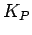

Next: PID Algorithm Implementation Up: FlightGear Autopilot: Theory, Configuration, Previous: Introduction
I find control theory and PID algorithms very fascinating (at least at a simple level) so I want to share a few basics. Although the FlightGear PID algorithm is a bit more sophisticated, effective control modules can be built with just a few simple building blocks.
Typical autopilots are built using a PID algorithm. PID stands for proportional, integral, and derivative. Typically a PID controller manipulates one control output to force a process value towards a reference point.
Let me say that again an a bit different way. Imagine a cruise control on a car. We know the current speed. We know the target speed. And we know the accelerator position. The cruise control will manipulate the accelerator position (control output) to try to make the current speed (process value) equal to the target speed (reference point.) How the cruise control calculates what accelerator position is needed to hold the desired speed (even going up and down hills) is where the magic happens.
I'll explain the three components (proportional, integral, and derivative) of a PID controller next.
All three components of the PID algorithm are driven by the difference
between the process value (i.e. the current speed) and the reference
point (i.e. the target speed.) We will call this difference (of
error) for one particular time step . For that same time step,
we call the process value  and the reference point
and the reference point  .
.
The output value (i.e. the accelerator position) is called .
The proportional component simply calculates based on the size of the error term by simply multiplying it by a constant, .
For simple situations, this all by itself can be a very effect control
algorithm. Typically this works best when you know that when  then . For example, imagine a simple wing leveler in an
aircraft. The process value is going to be bank angle, the reference
point is going to be zero (zero bank angle means the wings are level.)
Assume a well trimmed aircraft with neutral stability so that when the
ailerons are zero there is no change in bank. A proportional only
control would set the aileron deflection inversely proportional to the
bank angle. As the bank angle gets closer to zero, the aileron
deflection gets closer to zero. Something as simple as this (a
formula with one multiply operation) can be an amazingly effective and
stable controller.
then . For example, imagine a simple wing leveler in an
aircraft. The process value is going to be bank angle, the reference
point is going to be zero (zero bank angle means the wings are level.)
Assume a well trimmed aircraft with neutral stability so that when the
ailerons are zero there is no change in bank. A proportional only
control would set the aileron deflection inversely proportional to the
bank angle. As the bank angle gets closer to zero, the aileron
deflection gets closer to zero. Something as simple as this (a
formula with one multiply operation) can be an amazingly effective and
stable controller.
Unfortunately life is often more complicated than we'd like, and even in the case of a simple wing leveler, you encounter situations where the aircraft isn't perfectly trim and zero aileron deflection does not always equal zero roll motion. In an aircraft such as a Cessna 172, the amount of aileron deflection needed to keep the wing level can vary with speed. In these cases, a proportional only controller will stabilize out quickly, but will stabilize to the wrong value. We need a way to drive the error in the proportional only controller to zero.
Enter the Integral component of the PID algorithm. Remember back to your calculus days, integral refers to the area under a curve. If you have a function, the integral of that function produces a second function which tells you the area under curve of the first function.
Fortunately we usually don't have a formula for the first function since it changes depending on external conditions (i.e. current speed in a car.) That means we can't integrate this function directly and we are spared all the potentially messy calculus.
So we use an alternative approach to approximate the error under the
process value curve. At each time step we know which is the
difference between the process value and the reference point. If we
multiply this distance times  (the time step) we get an area which
approximates the error under the curve just for this time step. If we
add these areas up over time, we get a very reasonable approximation
of the area under the curve.
(the time step) we get an area which
approximates the error under the curve just for this time step. If we
add these areas up over time, we get a very reasonable approximation
of the area under the curve.
Essentially what this does is that the longer time passes with us not at our target value, the larger the sum of the (error dt)'s becomes over time. If we use this sum to push our output value (i.e. our accelerator position) then the longer we don't quite hit our target speed, the further the system pushes the accelerator pedal. Over time, the integral component compensates for the error in the proportional component and the system stabilizes out at the desired speed.
Hopefully someone else can chip in and add more explanation to this section. But going back again to calculus. The derivative of a function implies the rate of change of the function output. If you know the function, you can take the derivative of that function to produce a second function. For any point in time, the derivative function will tell you the rate of change (or slope) of the first function.
Conceptually, this makes sense in the context of a controller. How quickly we are closing on our target value (i.e. the rate of change from each time step to the next) is an important piece of information that can help us build a more stable system that more quickly achieves the target value.
For a car cruise control, we are measuring velocity at each time step. The rate of change of velocity is defined as acceleration (for those that remember your physics.)
Now don't you wish you took calculus and physics in school? Or if you did take them, don't you wish you had been paying attention? Me too. :-)
Here is a key point to understand. The proportional component is very stable. The Integral and Derivative components are very unstable.
If we build a proportional only controller, it will be very stable but will stabilize to the wrong value. (i.e. if we want to go 90km/hr, it might stabilize out to 82km/hr.)
If we build an integral only controller it will quickly hit the target value, but will overshoot, then overcompensate, and will oscillate wildly around the target value. It is very unstable.
The trick then is to combine these components together by summing them. The actual output is equal to what the P component says the output should be plus what the I component says the output should be plus what the D component says the output should be. You can assign a weighting value to each component to increase or decrease it's relative power to influence the final output value.
As you can see, the actual math involved in a PID controller (while rooted in some deep theory) is actually quite simple to implement. The real trick for creating a well behaved PID controller and a well behaved autopilot is tuning the relative weights of each of the P, I, and D components.